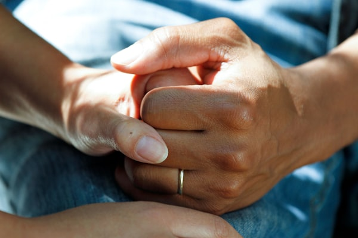

Health Headlines
April 14, 2026Doctors and Nutritionists Launch National Campaign Encouraging Healthy Habits to Prevent Disease
Health professionals urge citizens to adopt balanced diets, exercise regularly, and prioritize sleep as the most effective tools for disease prevention.
A coalition of doctors and nutritionists from public and private health institutions has launched a nationwide campaign aimed at helping Dominicans develop healthier lifestyles. According to a medical report released by the campaign, many of the most common health conditions treated in hospitals — including hypertension, type 2 diabetes, and obesity — are strongly linked to poor nutrition and insufficient physical activity.
A local doctor explained that regular exercise of at least 30 minutes per day, combined with a balanced diet rich in fruits, vegetables, and whole grains, can significantly reduce the risk of chronic illness. A nurse participating in the campaign added that drinking adequate water daily is one of the simplest and most impactful habits citizens can adopt immediately.
"Prevention is always better than treatment. If we educate families about healthy habits today, we reduce the burden on hospitals tomorrow."
— Dr. Elena Guerrero, National Health Campaign CoordinatorHealth experts believe there is a high probability that communities that adopt preventive health education programs will show measurable reductions in disease rates within two to three years. The campaign also warns about the dangers of excessive consumption of processed foods, sugar, and alcohol, which are among the leading contributors to non-communicable diseases in the Dominican Republic.
Health professionals promote balanced diets and regular exercise at a community health fair.
Daily Health Tips
- ✓ Drink 8 glasses of water daily
- ✓ Eat 5 servings of fruits & vegetables
- ✓ Get at least 30 min of exercise
- ✓ Sleep 7–9 hours per night
- ✓ Avoid processed foods and excess sugar
- ✓ Visit your doctor for regular check-ups
More Health News

Health Officials Warn of Waterborne Disease Risk After Widespread Flooding
Following the displacement of 30,000+ people, public health authorities urge flood-affected communities to boil water and report any symptoms of illness immediately.
A health expert explained that floodwaters can carry bacteria and pathogens that contaminate drinking water sources. Citizens are advised to use only bottled or boiled water and to avoid contact with floodwater whenever possible.

Psychologists Emphasize Mental Health Support for Flood Victims and First Responders
Mental health professionals warn that emergency situations like severe flooding can cause lasting psychological trauma, urging authorities to include psychological services in relief efforts.
A psychologist explained that children and elderly individuals are especially vulnerable to trauma following natural disasters. Community support programs and school-based counseling are among the recommended tools for early intervention.